| 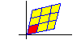 | 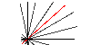 |
| Linear Transformation (Lattice) | Linear Transformation (Lines) |
| 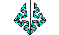 | 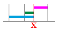 |
| Fractal | Problem of Absolute Value |
| 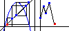 | 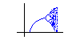 |
| Iterating f(x)=ax(1-x) | Feigenbaum Plot |
| 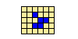 | |
| Life Game | Life Game (Large) |
| 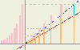 | 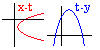 |
| Sum of geometric series | Problem of Quadratic Functions (1) |
| 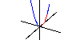 | 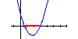 |
| Problem of Quadratic Functions (2) | Problem of Quadratic Functions (3) |
| 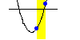 | 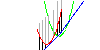 |
| Problem of Quadratic Functions (4) | Congruence of Quadratic function |
| 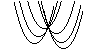 | 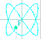 |
| Minimum Value of Quadratic Functions | Parametric Equations |
| 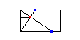 | 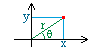 |
| Problem of Rectangle | Rectangular and polar coordinates |
| 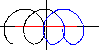 | |
| Autonomous System (Linear_Part I) | Autonomous System (Linear_Part II) |
| 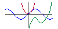 | 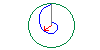 |
| Simple Graph | Log Clock |
| 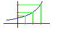 | |
| Log M + log N | Snail Shell |
| 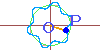 | 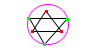 |
| Rotary Curve | Orthocenter and Circumcenter |
| 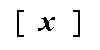 | 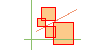 |
| Gauss' symbol | The Least-Squares Line |
| 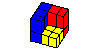 | 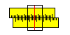 |
| Factorization of x^3-y^3 | Slide Rule |
| 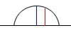 | 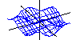 |
| Semicircle and Arithmetic,Geometric mean | Simple 3D Graph z=f(x,y) |
| 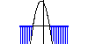 |
| Pascal's Triangle | Problem ax^2 - (a^2 + a)x + a^2 < 0 |
| 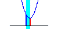 | |
| Maximum and Minimum of Function | Maximum and Minimum of Function(2) |
| 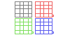 | |
| Multiple Windows | Linear Transformation(Dog 1) |